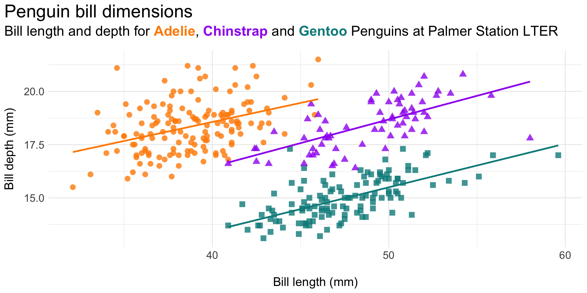
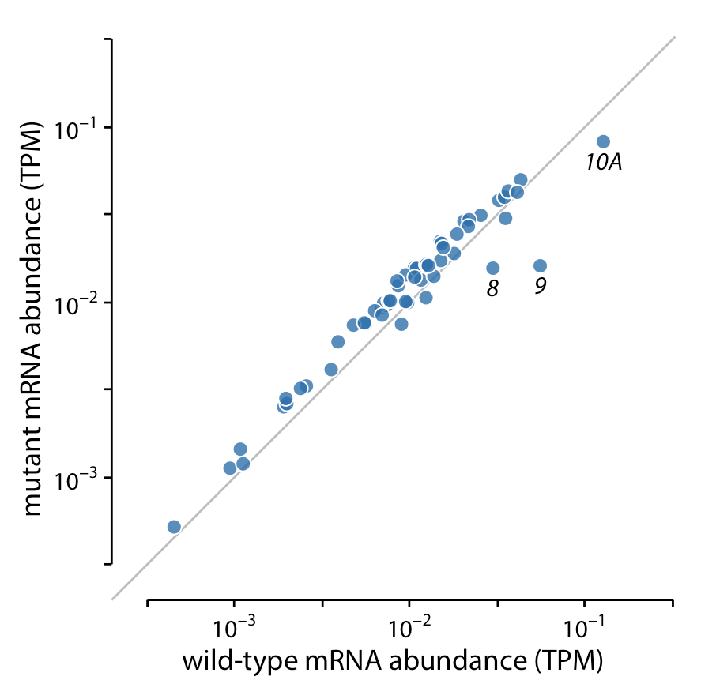

Choosing the right graphic form is just the first step! It’s important to consider how you can enhance your visualization by:

The Data-Ink ratio was introduced by Edward Tufte (1983) and argues that non-data-ink (i.e. ink used for for everything except the presentation of data itself) should be removed wherever possible.
\[ \text{Data-ink ratio} = \frac{\text{Data-ink}}{\text{Total ink used to print the graphic}} \]
Do so by starting with a complete theme (e.g. theme_classic(), theme_void()) and add / remove elements using theme().
Low Data-Ink ratio
High Data-Ink ratio

Ask yourself, “Does this legend provide additional information that I can’t get elsewhere?”. If not, remove a legend using:


Doing so increases the data-ink ratio and reduces overall eye movement.
We can use a combination of coord_flip(), geom_text(), labs(), and theme() to further eliminate non-data ink and reduce overall eye movement.


Of course, a visualization like this wouldn’t be appropriate for all audiences / contexts (e.g. scientific journal). But, despite the removal of axes / text / legend, a reader could still walk away with the same type of information.
Reduce eye movement by updating the legend position (e.g. move it onto the plot panel):
Original plot:

Updated legend position:

Also note the redundant species mapping (color and shape) – sometime redundancy is important for accessibility!
Reduce eye movement and excess ink by including legend info in the plot (sub)title (here, using the {ggtext} package; minimal code example, below):
Original plot:

Legend as styled title text:

Reduce eye movement and excess ink by including legend info as direct labels on the plot (here, using the {geomtextpath} package; minimal code example, below):
Original plot:

Legend as direct labels:

Is the y-axis necessary for this plot? What’s the author’s goal? How do annotations help achieve that goal?


Is white space always your friend?, by Neil Richards
02:00
“The key thing we do is to add a title to the chart, as an entry point and to explain what is going on. Text and other annotations add enourmous value for non-chart people.”
-John Burn-Murdoch, Financial Times
Vaccines and Omicron mean Covid now less deadly than flu in England, by John Burn-Murdoch
Facets (aka small multiples) allow us to more easily view individual groups. Here, the author plots individual groups (male vs. female passenger distributions on the Titanic) against the data set total (distribution of all passengers):
The area under each curve corresponds to the total number of male and female passengers with known age (468 (M) and 288 (F)).

The colored areas show the density estimates of the ages of M and F passengers, and the gray areas show the overall passenger age distribution.

Add vertical (geom_vline()) or horizontal (geom_hline()) lines at important values:

Fig cap: Temporal Variation in Bottom Temperature. Monthly bottom (4.5 m depth) temperatures at Mohawk Reef (34.396290, -119.731297) in Santa Barbara, CA compiled from 2005-2017. Vertical dashed lines represent three of four treatment temperatures (11, 16, 21°C). Data Source: Santa Barbara Coastal Long-Term Ecological Research group (adapted from Csik et al. 2023)
For data where the relevant comparison is the x = y line (e.g. scatter plots of paired data), plot the 1:1 line.
Below, the author compares gene expression levels in a mutant virus to the non-mutated (wild-type) variant. He presents three (increasingly better) versions of the same plot:
Bad

Better

Best

Highlight data by coloring groups of interest either manually or by using helpful packages, like {gghighlight} (we saw an example of this in lecture 3.3):
Or add annotations to your plots to call attention to data of interest (here, shown using the {ggforce} package; minimal code example, below):
It can be nearly impossible to easily process many different variables, colors, shapes, etc. on the same visualization (and realistically, most people won’t want to take the time to even try):
Source: Unknown, but borrowed from Allison Horst’s lecture
It can be nearly impossible to easily process many different variables, colors, shapes, etc. on the same visualization (and realistically, most people won’t want to take the time to even try):
Source: Unknown, but borrowed from Allison Horst’s lecture
The scales of dual axis charts are arbitrary and therefore can (deliberately) mislead readers about the relationship between the two data series. Let’s take this example using real Worldbank data for the German GDP and the global GDP between 2004 and 2016:

The scales of dual axis charts are arbitrary and therefore can (deliberately) mislead readers about the relationship between the two data series. Let’s take this example using real Worldbank data for the German GDP and the global GDP between 2004 and 2016:

While both GDPs may appear to increase at the about same rate, they actually don’t – global GDP increased by 80% until 2014, while the German GDP increased by 40%.
Separate your data series into side-by-side charts – this allows us to create two different axes for two different charts.
Indexed charts show the relative change (percentage increase or decrease) of a data series over time. Consider adding labels or tooltips (e.g. using {plotly}) to include important absolute numbers.
Consider prioritizing and plotting the more important of the two data series. Then use annotations to add information about the omitted variable. This option may not work well for all data sets, but can be effective for dual-axis charts that present both absolute and relative numbers of the same measure.
A connected scatterplot places one variable on the y-axis and the other on the x-axis (here, replacing time). Be mindful that these plots are generally less inutitive for a reader and may take more time to decipher patterns.
. . . is actually a problem with humans – we’re not so great at comparing angles. We’re bad at comparing angles within a single pie chart if they’re all similar:

. . . is actually a problem with humans – we’re not so great at comparing angles. And we’re even worse at comparing angles across multiple pie charts:

ABC Enterprise Sales. Source: How to Use Charts and Graphs Effectively, by MindTools
IF you decide a pie chart is the right option, consider:
As an alternative to a pie chart, consider treemaps. Treemaps display hierarchical data as a set of nested rectangles – simpler versions can be used to display parts of a whole using rectangles (which are easier for us to estimate than angles).

Source: {treemapify} pkgdown site
Occlusion: When we see one object occlude (aka obstruct) another on a 2D surface, our brain perceives the object being hidden as farther away:
Perspective distortion: When we view objects in 3D, the objects farther away appear smaller, but our brain perceives them to be of larger size than in the picture:
Consider how gray and blue areas visually compare in the 3D version? What about gray and orange? Now how do your interpretations change when inspecting the 2D version?
The pie chart on the right is an example of using 3D purely for decorative purposes. Here, the third dimension doesn’t actually convey any additional data. Claus Wilke calls this gratuitous 3D, and you should always avoid it.
A plot with three genuine position scales (x, y, and z) to represent mtcars data (viewed from four different perspectives:
If we primarily care about fuel efficiency as the response variable, plot it twice (once against displacement and once against power):
If we are more interested in how displacement and power relate to each other, with fuel efficiency as a secondary variable of interest, create a bubble chart (plot power vs. displacement and map fuel efficiency onto the size of the dots). Be mindful that three variables (even in a 2D space) are still challenging for readers to quickly comprehend.
Award-winning data visualization by Simon Scarr (left), and a copy / remake of that visualization which follows the rules, created by Andy Cotgreave (right).
Image & caption source: Master the rules - then break them

Clearing the Air, by Christopher Ingraham, writing for The Washington Post
Take some time to discuss the following:
02:00
Annotations adapted from @chezVoila

Perfectly Proportional Penguins, by Cara Thompson as part of TidyTuesday (code)
Take some time to discuss the following:
02:00